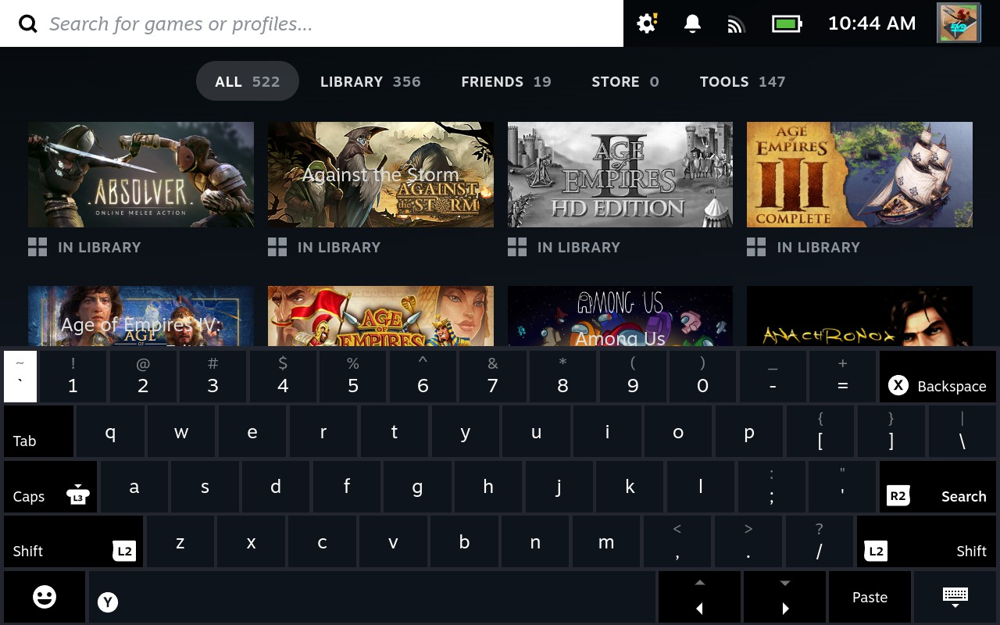

2. Controls
The controls of the Steam Deck might seem familiar to you if you have used other handheld gaming consoles in the past. If you are new to handheld gaming, do not fret! The controls of the Steam Deck become second-nature to use pretty quickly.
This section goes over the basics of the controls for the Steam Deck, as well as handy button shortcuts.
2.1 Button Locations
The majority of the Steam Deck's buttons are on its front:
- D-pad
- View
- Left and Right Thumbsticks (also L3 and R3, respectively)
- Steam
- Left and Right Trackpads
- Quick Access
- Menu
- ABXY
Figure 2.1: Front view of the Steam Deck controls. Image taken from https://www.steamdeck.com/en/tech/deck.
On the top of the Steam Deck, there are the following buttons:
- L2
- L1
- Volume - +
- Power
- R2
- R1
Figure 2.2: Top view of the Steam Deck's controls. Image taken from https://www.steamdeck.com/en/tech/deck.
Finally, on the back of the Steam Deck are:
- R4
- R5
- L5
- L4
Figure 2.3: Back view of the Steam Deck controls. Image taken from https://www.steamdeck.com/en/tech/deck.
2.2 Menu Controls
To navigate within the menus on the Steam Deck, you can use any of the following:
To select, press the .
To unselect, or go back, press the .
2.3 Type with the Keyboard
When prompted to type in information, the will appear.
You can type by using the , , or the to navigate and to select a key. Alternatively, you can use the to select keys.
There are several shortcuts that will be displayed on the keyboard (for example, the button can be used for .)
Figure 2.4: The Keyboard Screen.
2.4 Common Game Controls
Because the Steam Deck plays games from your Steam Library, not every game has the same controls. However, there are several controls that many (if not the majority) of games share.
This table explains several of these common action/button pairings:
| Action Within a Game | Common Steam Deck Button(s) |
|---|---|
| Movement |
|
| Select | A |
| Back | B |
| Start Menu | Menu |
| Select Menu | View |
| Character Skills |
|
For more specifics on game controls, see Section 4.
2.5 Button Shortcuts
There are several helpful button shortcuts you can perform:
| Button Shortcut | Action |
|---|---|
| Steam + B (long press) | Force Game Shutdown |
| Steam + X (release press) | Show Keyboard Screen |
| Steam + R1 | Take Screenshot |
| Steam + L2 | Right Mouse Click |
| Steam (hold) + move Right Thumbstick | Mouse Cursor Mode |
| Steam + R2 | Left Mouse Click |
| Steam + L2 | Right Mouse Click |
| Steam + Left Thumbstick (pointed up) | Brightness Up |
| Steam + Left Thumbstick (pointed down) | Brightness Down |
For a complete list of shortcuts, press down the button for a few seconds to bring up the list on screen.
Next Section
Back to Table of Contents